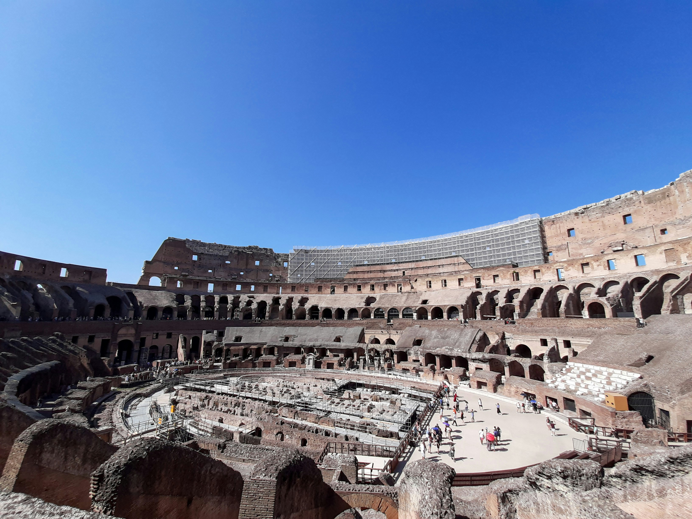
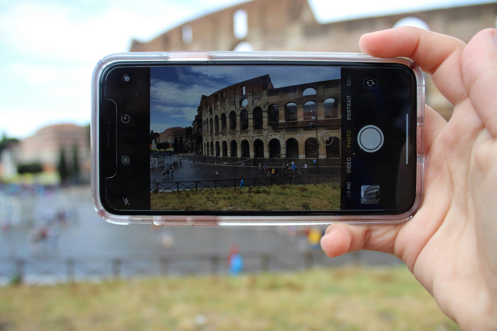

El Coliseo Romano
El Coliseo de Roma es uno de los monumentos más icónicos del mundo, reflejando la grandeza del Imperio Romano. Inaugurado en el año 80 d.C., el Coliseo ha sido testigo de luchas de gladiadores, eventos públicos, y espectáculos impresionantes. A pesar de los siglos, sigue siendo un símbolo de la arquitectura y el poder romano.
| Aspecto | Detalles |
|---|---|
| Ubicación | Roma, Italia |
| Año de construcción | Entre 70-80 d.C. |
| Capacidad | 50,000 - 80,000 espectadores |
| Material | Piedra caliza, mármol, hormigón y ladrillo |
| Propósito | Entretenimiento: luchas de gladiadores, eventos públicos |
| Estado actual | Parcialmente en ruinas debido a terremotos y saqueos |

El Coliseo es un ícono mundial de Roma.

Vista del impresionante interior del Coliseo.

El Coliseo iluminado por la noche.
Datos importantes:
- El Coliseo fue incluido en las 7 Maravillas del Mundo Moderno en 2007.
- Originalmente, se llamaba Anfiteatro Flavio en honor a la dinastía Flavia.
- Tenía un sistema de elevadores y pasillos subterráneos para los gladiadores y animales.
- La arena podía llenarse de agua para simular batallas navales.
- Durante la Edad Media, se usó como fortaleza y cantera.